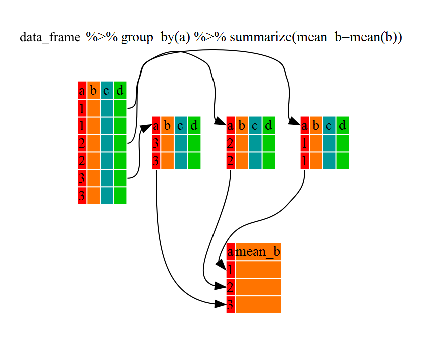

2 R Introduction
Topics
- Assignment
- Function arguments
- Finding help
- Reading data
- Filtering rows, selecting columns, and arranging data
- Conditional operations
- Saving data
2.1 Setup
2.1.1 Class Structure
- Informal — Ask questions at any time. Really!
- Collaboration is encouraged - please spend a minute introducing yourself to your neighbors!
2.1.2 Software & materials
You should have R and RStudio installed — if not:
- Download and install R: http://cran.r-project.org
- Download and install RStudio: https://www.rstudio.com/products/rstudio/download/#download
Download materials:
- Download class materials at https://github.com/IQSS/dss-workshops/raw/master/R/Rintro.zip
- Extract materials from the zipped directory
Rintro.zip(Right-click => Extract All on Windows, double-click on Mac) and move them to your desktop!
Start RStudio and create a new project:
- On Windows click the start button and search for RStudio. On Mac RStudio will be in your applications folder.
- In Rstudio go to
File -> New Project. - Choose
Existing Directoryand browse to theRintrodirectory. - Choose
File -> Open Fileand select the blank version of the.Rmdfile.
2.1.3 Prerequisites
- None — assumes no prior knowledge of R
- Relatively slow-paced
2.1.4 Learning Outcomes
- Basic R syntax
- R package ecosystem
- Reading / writing data and finding help
- Data cleaning and manipulation
- Conditional operations
2.1.5 What is R?
R is a free language and environment for statistical computing and graphics. R has existed for over 25 years and is now the most popular software for data analysis. It has an extensive ecosystem of about 15,000 add on packages covering all aspects of statistics.
2.1.6 R Interfaces
There are many different ways you can interact with R. See the Data Science Tools workshop notes for details.
For this workshop we will use RStudio; it is a good R-specific integrated development environment (IDE) with many features.
There are also several different formats for writing code for R. Two of the most popular are:
R scripts — a type of plain text file that allows you to write R code and basic comments about the code:
Rmarkdown — a type of text file that allows you to include plain text with R code and easily convert the contents into HTML (for a webpage), MS Word, or PDF (via LaTeX). Many people write their journal papers, dissertations, and statistics/math class notes in Rmarkdown, since it is easy to use and to convert into other formats later.
Here are some resources for learning more about rmarkdown:
https://cran.r-project.org/web/packages/rmarkdown/vignettes/rmarkdown.html
The following RStudio and rmarkdown cheatsheets will also provide a
useful reference: https://rstudio.com/wp-content/uploads/2019/01/Cheatsheets_2019.pdf
2.2 Exercise 0
The purpose of this exercise is to give you an opportunity to explore the interface provided by RStudio. You may not know how to do these things; that’s fine! This is an opportunity to figure it out.
Also keep in mind that we are living in a golden age of tab completion. If you don’t know the name of an R function, try guessing the first two or three letters and pressing TAB. If you guessed correctly the function you are looking for should appear in a pop up!
- Try to get R to add 2 plus 2.
- Try to calculate the square root of 10.
- R includes extensive documentation, including a manual named “An introduction to R”. Use the RStudio help pane. to locate this manual.
2.3 R basics
2.3.1 Syntax
- R is case sensitive
- R ignores white space
- Object names should start with a letter
2.3.2 Asking for help
You can ask R for help using the
helpfunction, or the?shortcut.The
helpfunction can be used to look up the documentation for a function, or to look up the documentation to a package. We can learn how to use thestatspackage by reading its documentation like this:If you know the name of the package you want to use, then Googling “R package-name” will often get you to the documentation. Packages are hosted on several different repositories, including:
- CRAN: https://cran.r-project.org/web/packages/available_packages_by_name.html
- Bioconductor: https://www.bioconductor.org/packages/release/bioc/
- Github: http://rpkg.gepuro.net/
- R-Forge: https://r-forge.r-project.org/R/?group_id=1326
- If you know the type of analysis you want to perform, you can Google “CRAN Task Views”, where there are curated lists of packages https://cran.r-project.org/web/views/. If you want to know which packages are popular, you can look at https://r-pkg.org.
2.3.3 Function calls
The general form for calling R functions is
Arguments can be matched by name; unnamed arguments will be matched by position.
2.3.4 Assignment
Values can be assigned names and used in subsequent operations
- The gets
<-operator (less than followed by a dash) is used to save values - The name on the left gets the value on the right.
sqrt(10) ## calculate square root of 10; result is not stored anywhere
x <- sqrt(10) # assign result to a variable named xNames should start with a letter, and contain only letters, numbers, underscores, and periods.
2.4 Getting data into R
R has data reading functionality built-in – see e.g.,
help(read.table). However, faster and more robust tools are
available, and so to make things easier on ourselves we will use a
contributed package instead. This requires that we
learn a little bit about packages in R.
2.4.1 Installing & using R packages
R is a modular environment that is extended by the use of packages. Packages are collections of functions or commands that are designed to perform specific tasks (e.g., fit a type of regression model). A large number of contributed packages are available (> 15,000).
Using an R package is a two step process:
Install the package onto your computer using the
install.packages()function. This only needs to be done the first time you use the package.Load the package into your R session’s search path using the
library()function. This needs to be done each time you use the package.
While R’s built-in packages are powerful, in recent years there has
been a big surge in well-designed contributed packages for R. In
particular, a collection of R packages called
tidyverse have been
designed specifically for data science. All packages included in
tidyverse share an underlying design philosophy, grammar, and
data structures. This philosopy is rooted in the idea of “tidy data”:

We will use tidyverse packages throughout the
workshop, so let’s install them now:
## install.packages("tidyverse")
# when you install tidyverse for the first time you will be asked
# a question in the Console - please answer by typing "no" in the Console.
library(tidyverse)A typical workflow for using tidyverse packages looks like this:

We can also install the rmarkdown package, which will allow us to
combine our text and code into a formatted document at the end of
the workshop:
2.4.2 Readers for common file types
To read data from a file, you have to know what kind of file
it is. The table below lists functions from the readr package, which
is part of tidyverse, that can import data from common plain-text formats.
| Data Type | Function |
|---|---|
| comma separated | read_csv() |
| tab separated | read_delim() |
| other delimited formats | read_table() |
| fixed width | read_fwf() |
Note You may be confused by the existence of similar functions,
e.g., read.csv and read.delim. These are legacy functions that
tend to be slower and less robust than the readr functions. One way
to tell them apart is that the faster more robust versions use
underscores in their names (e.g., read_csv) while the older
functions use dots (e.g., read.csv). My advice is to use the more
robust newer versions, i.e., the ones with underscores.
2.4.3 Baby names data
As an example project we will analyze the popularity of baby names in the US from 1960 through 2017. The data were retrieved from https://catalog.data.gov/dataset/baby-names-from-social-security-card-applications-national-level-data.
Here are the questions we will use R to answer:
- In which year did your name (or another name) occur most frequently by count?
- Which names have the highest popularity by proportion for each sex and year?
- How does the percentage of babies given one of the top 10 names of the year change over time?
2.5 Exercise 1
Reading the baby names data
Make sure you have installed the tidyverse suite of packages and attached them with library(tidyverse).
- Open the
read_csvhelp page to determine how to use it to read in data.
- Read the baby names data using the
read_csvfunction and assign the result with the namebaby_names.
2.6 Popularity of your name
In this section we will pull out specific names and examine changes in their popularity over time.
The baby_names object we created in the last exercise is a data.frame.
There are many other data structures in R, but for now we’ll focus on
working with data.frames. Think of a data.frame as a spreadsheet.
R has decent data manipulation tools built-in – see e.g.,
help(Extract). But, tidyverse packages often provide
more intuitive syntax for accomplishing the same task. In
particular, we will use the dplyr package from tidyverse
to filter, select, and arrange data, as well as create new variables.

2.6.1 Filtering, selecting, & arranging data
One way to find the year in which your name was the most popular is to filter out just the rows corresponding to your name, and then arrange (sort) by Count.
To demonstrate these techniques we’ll try to determine whether
“Alex”" or “Mark” was more popular in 1992. We start by filtering the
data so that we keep only rows where Year is equal to 1992 and Name is
either “Alex” or “Mark”.
baby_names_alexmark <- filter(baby_names,
Year == 1992 & (Name == "Alex" | Name == "Mark"))
print(baby_names_alexmark) # explicit printing
baby_names_alexmark # implicit printingNotice that we can combine conditions using & (AND)
and | (OR).
In this case it’s pretty easy to see that “Mark” is more popular, but to make it even easier we can arrange the data so that the most popular name is listed first.
We can also use the select() function to subset the data.frame
by columns. We can then assign the output to a new object. If we
would just like to glance at the first few lines we can use the
head() function:
2.6.2 Other logical operators
In the previous example we used == to filter rows. Other relational
and logical operators are listed below.
| Operator | Meaning |
|---|---|
== |
equal to |
!= |
not equal to |
> |
greater than |
>= |
greater than or equal to |
< |
less than |
<= |
less than or equal to |
%in% |
contained in |
These operators may be combined with & (and) or | (or).
2.7 Exercise 2.1
Peak popularity of your name
In this exercise you will discover the year your name reached its maximum popularity.
Read in the “babyNames.csv” file if you have not already done so,
assigning the result to baby_names. Make sure you have installed
the tidyverse suite of packages and attached them with library(tidyverse).
- Use
filterto extract data for your name (or another name of your choice).
- Arrange the data you produced in step 1 above by
Count. In which year was the name most popular?
- BONUS (optional): Filter the data to extract only the row containing the most popular boys name in 1999.
2.8 Pipe operator in R
There is one very special operator in R called a pipe operator that
looks like this: %>%. It allows us to “chain” several function calls and,
as each function returns an object, feed it into the next call in a single
statement, without needing extra variables to store the intermediate
results. The point of the pipe is to help you write code in a way that is
easier to read and understand as we will see below.

There is no need to load any additional packages as the operator is made
available via the magrittr package installed as part of tidyverse. Let’s
rewrite the sequence of commands to output ordered counts for names
“Alex” or “Mark”.
# unpiped version
baby_names_alexmark <- filter(baby_names, Year == 1992 & (Name == "Alex" | Name == "Mark"))
arrange(baby_names_alexmark, desc(Count))# piped version
baby_names %>%
filter(Year == 1992 & (Name == "Alex" | Name == "Mark")) %>%
arrange(desc(Count))Hint: try pronouncing “then” whenever you see %>%.
# pseudocode
# unpiped version
filter(dataset, condition)
# piped version
dataset %>% filter(condition)
# what the pipe is doing
output_of_thing_on_left %>% becomes_input_of_thing_on_rightAdvantages of using the pipe:
- We can avoid creating intermediate variables, such as
baby_names_alexmark - Less to type
- Easier to read and follow the logic (especially avoiding using nested functions)
2.9 Exercise 2.2
Rewrite the solution to Exercise 2.1 using pipes. Remember that we were looking
for the year your name reached its maximum popularity. For that, we filtered
the data and then arranged by Count.
2.10 Plotting baby name trends over time
It can be difficult to spot trends when looking at summary tables. Plotting the data makes it easier to identify interesting patterns.
R has decent plotting tools built-in – see e.g., help(plot).
However, again, we will make use of a contributed
package from tidyverse called ggplot2.
For quick and simple plots we can use the qplot() function. For example,
we can plot the number of babies given the name “Diana” over time like this:
Interestingly, there are usually some gender-atypical names, even for very strongly
gendered names like “Diana”. Splitting these trends out by Sex is very easy:
2.11 Exercise 3
Plotting peak popularity of your name
Make sure the tidyverse suite of packages is installed, and that you
have attached them using library(tidyverse).
- Use
filterto extract data for your name (same as previous exercise)
- Plot the data you produced in step 1 above, with
Yearon the x-axis andCounton the y-axis.
- Adjust the plot so that is shows boys and girls in different colors.
- BONUS (Optional): Adust the plot to use lines instead of points.
2.12 Finding the most popular names
Our next goal is to find out which names have been the most popular.
2.12.1 Computing better measures of popularity
So far we’ve used Count as a measure of popularity. A better
approach is to use proportion to avoid confounding
popularity with the number of babies born in a given year.
The mutate() function makes it easy to add or modify the columns
of a data.frame. For example, we can use it to rescale the count
of each name in each year:
If we like, we can also select() a subset of columns from the baby names data:
2.12.2 Operating by group
Because of the nested nature of our data, we want to compute rank
or proportion within each Sex by Year group. The dplyr
package makes this relatively straightforward.
baby_names <-
baby_names %>%
group_by(Year, Sex) %>%
mutate(Rank = rank(Count_1k)) %>%
ungroup()
head(baby_names)Note that the data remains grouped until you change the groups by
running group_by() again or remove grouping information with
ungroup().

2.13 Exercise 4
Most popular names
In this exercise your goal is to identify the most popular names for each year.
- Use
mutate()andgroup_by()to create a column namedProportionwhereProportion = Count/sum(Count)for eachYear X Sexgroup. Use pipes wherever it makes sense.
- Use
mutate()andgroup_by()to create a column namedRankwhereRank = rank(desc(Count))for eachYear X Sexgroup.
- Filter the baby names data to display only the most popular name
for each
Year X Sexgroup. Keep only the columns:Year,Name,Sex, andProportion.
- Plot the data produced in step 3, putting
Yearon the x-axis andProportionon the y-axis. How has the proportion of babies given the most popular name changed over time?
2.14 Percent choosing one of the top 10 names
You may have noticed that the percentage of babies given the most popular name of the year appears to have decreased over time. We can compute a more robust measure of the popularity of the most popular names by calculating the number of babies given one of the top 10 girl or boy names of the year.
To compute this measure we need to operate within groups, as
we did using mutate() above, but this time we need to collapse each
group into a single summary statistic. We can achieve this using the
summarize() function.
First, let’s see how this function works without grouping. The following code outputs the total number of girls and boys in the data:
Next, using group_by() and summarize() together, we can calculate the
number of babies born each year:
2.15 Exercise 5
Popularity of the most popular names
In this exercise we will plot trends in the proportion of boys and girls given one of the 10 most popular names each year.
- Filter the
baby_namesdata, retaining only the 10 most popular girl and boy names for each year.
- Summarize the data produced in step one to calculate the total Proportion of boys and girls given one of the top 10 names each year.
- Plot the data produced in step 2, with year on the x-axis
and total proportion on the y axis. Color by
Sexand notice the trend.
2.16 Saving our Work
Now that we have made some changes to our data set, we might want to save those changes to a file.
2.16.1 Saving individual datasets
You might find functions write_csv() and write_rds() from package
readr handy!
2.16.2 Saving multiple datasets
2.16.3 Saving & loading R workspaces
In addition to importing individual datasets, R can save and load entire “workspaces”. The workspace is your current R working environment and includes any user-defined objects. At the end of a session, you can save an “image” of the current workspace, which allows you to automatically reload the objects you previously created.
2.17 Exercise solutions
2.17.1 Ex 0: prototype
2.17.3 Ex 2.1: prototype
# 2. Arrange the data you produced in step 1 above by `Count`.
# In which year was the name most popular?2.17.5 Ex 3: prototype
2.17.6 Ex 4: prototype
## 1. Use `mutate()` and `group_by()` to create a column named `Proportion`
## where `Proportion = Count/sum(Count)` for each `Year X Sex` group.baby_names <-
baby_names %>%
group_by(Year, Sex) %>%
mutate(Proportion = Count/sum(Count)) %>%
ungroup()
head(baby_names) ## 2. Use `mutate()` and `group_by()` to create a column named `Rank` where
## `Rank = rank(desc(Count))` for each `Year X Sex` group.baby_names <-
baby_names %>%
group_by(Year, Sex) %>%
mutate(Rank = rank(desc(Count))) %>%
ungroup()
head(baby_names) ## 3. Filter the baby names data to display only the most popular name
## for each `Year X Sex` group.2.17.7 Ex 5: prototype
## 1. Filter the baby_names data, retaining only the 10 most
## popular girl and boy names for each year.most_popular <-
baby_names %>%
group_by(Year, Sex) %>%
filter(Rank <= 10)
head(most_popular, n = 10)## 2. Summarize the data produced in step one to calculate the total
## Proportion of boys and girls given one of the top 10 names
## each year.top10 <-
most_popular %>% # it is already grouped by Year and Sex
summarize(TotalProportion = sum(Proportion))2.18 Wrap-up
2.18.1 Feedback
These workshops are a work-in-progress, please provide any feedback to: help@iq.harvard.edu
2.18.2 Resources
- IQSS
- Workshops: https://dss.iq.harvard.edu/workshop-materials
- Data Science Services: https://dss.iq.harvard.edu/
- Research Computing Environment: https://iqss.github.io/dss-rce/
- HBS
- Research Computing Services workshops: https://training.rcs.hbs.org/workshops
- Other HBS RCS resources: https://training.rcs.hbs.org/workshop-materials
- RCS consulting email: mailto:research@hbs.edu
- Software (all free!):
- R and R package download: http://cran.r-project.org
- Rstudio download: http://rstudio.org
- ESS (emacs R package): http://ess.r-project.org/
- Cheatsheets
- Online tutorials
- Getting help:
- Documentation and tutorials: http://cran.r-project.org/other-docs.html
- Recommended R packages by topic: http://cran.r-project.org/web/views/
- Mailing list: https://stat.ethz.ch/mailman/listinfo/r-help
- StackOverflow: http://stackoverflow.com/questions/tagged/r
- R-Bloggers: https://www.r-bloggers.com/
- Coming from …